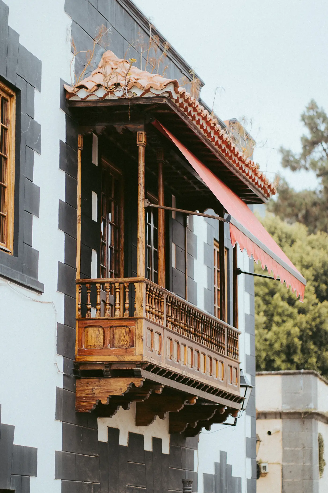

Tú pones la idea, nosotros el casco.

- 4,9 · 31 reseñas
- Trato directo con Antonio
- Obra limpia y sin ruido
- Las Palmas de G.C.
Reformas integrales en Las Palmas
- Reformas integrales
- Baños
- Alicatados
- Tarima flotante
- Pintura y fachadas
- Humedades
- Locales comerciales
- Comunidades y viviendas vacacionales
Lo que dicen nuestros clientes
“Terminamos la reforma completa de nuestro piso, en una cuarta planta sin ascensor, y no podríamos estar más contentos. Muy profesionales, súper limpios y sorprendentemente silenciosos.”
“Fueron la solución a nuestros problemas con las humedades: rápidos, con resultados impecables y atención al detalle. Cuidaron muchísimo la casa y los muebles.”
“Contacté con Antonio para reparar el baño y la experiencia ha sido excelente: profesional, rápido y con una gran atención al detalle. 100% recomendable.”
Sabemos lo que es abrirle la puerta de casa a una obra. Por eso entramos como invitados: tapamos suelos y muebles, trabajamos sin ruido y lo dejamos todo recogido. Lo único que se queda es la reforma. Bueno, y las ganas de enseñarla.
Cómo trabajamos
Nuestros clientes destacan que somos claros desde el principio. Este es el método que seguimos en cada proyecto.
Visita y medición
Vamos a tu casa, tomamos medidas y escuchamos lo que quieres conseguir.
Presupuesto claro
Te explicamos qué vamos a hacer y cuánto cuesta antes de empezar.
Tu casa, protegida
Cubrimos suelos y muebles para que todo quede como estaba.
Obra limpia y en silencio
Trabajamos ordenados y sin ruido, aunque sea un cuarto piso sin ascensor.
Entrega impecable
Repasamos cada detalle contigo y te dejamos la casa limpia y lista para vivir.
Cómo trabajamos
Visita y medición
Vamos a tu casa, tomamos medidas y escuchamos lo que quieres conseguir.
Presupuesto claro
Te explicamos qué vamos a hacer y cuánto cuesta antes de empezar.
Tu casa, protegida
Cubrimos suelos y muebles para que todo quede como estaba.
Obra limpia y en silencio
Trabajamos ordenados y sin ruido, aunque sea un cuarto piso sin ascensor.
Entrega impecable
Repasamos cada detalle contigo y te dejamos la casa limpia y lista para vivir.
El cambio, de un vistazo
Toca una obra para ver el antes y el después en grande. Con las flechas recorres la fila.